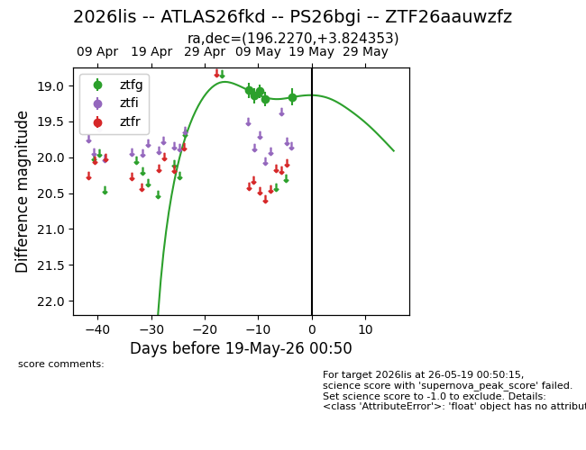
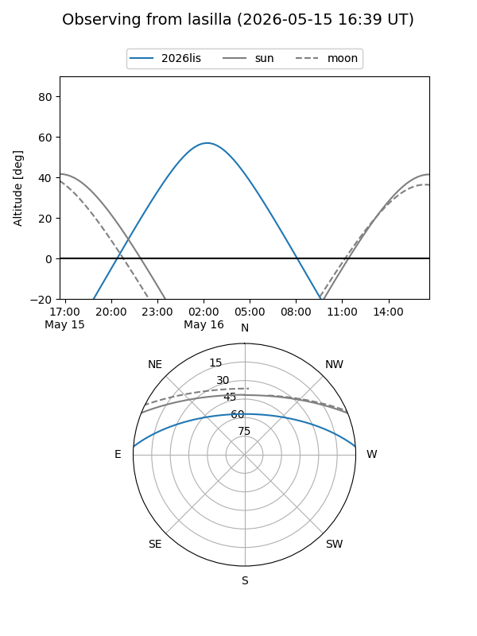
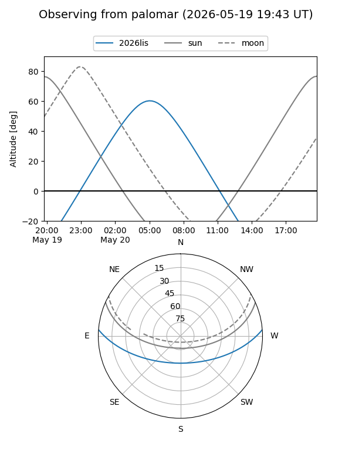
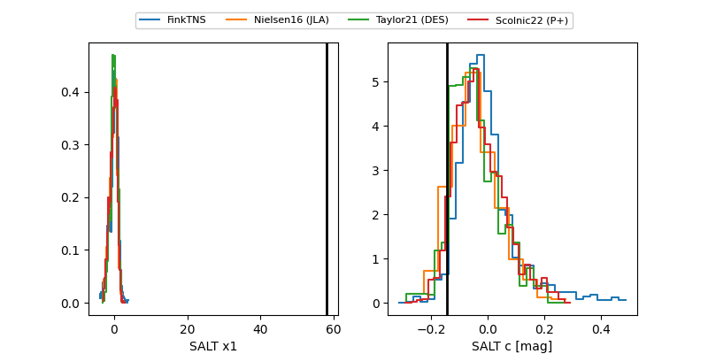

2026lis
Target 2026lis at 2026-05-19 00:51
Aliases and brokers:
FINK: link
Lasair: link
ALeRCE: link
TNS: link
YSE: link
alt names
ZTF26aauwzfz (ztf,fink_ztf)
2026lis (tns,yse)
ATLAS26fkd (atlas)
PS26bgi (panstarrs)
Coordinates:
equatorial (ra, dec) = 196.2270,+3.82435
equatorial (HMS+DMS) = 13:04:54.47,+03:49:27.67
galactic (l, b) = (311.3755,+66.47502)
Flags:
Photometry:
last ztfg=19.16
5 ztfg detections
Lightcurve

Visibility


Additional plots
